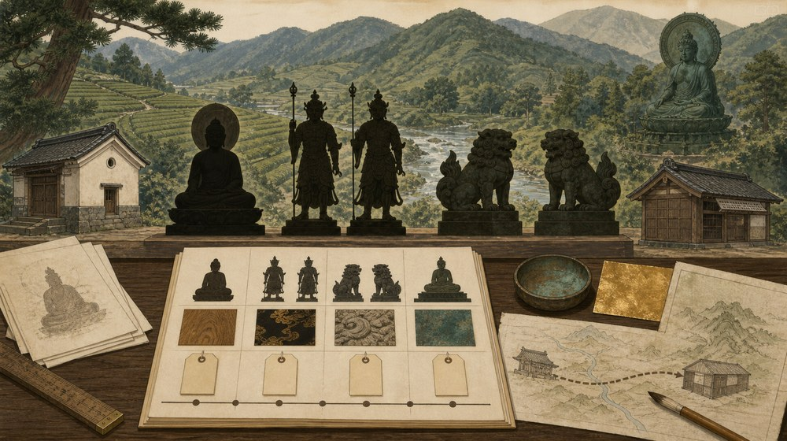
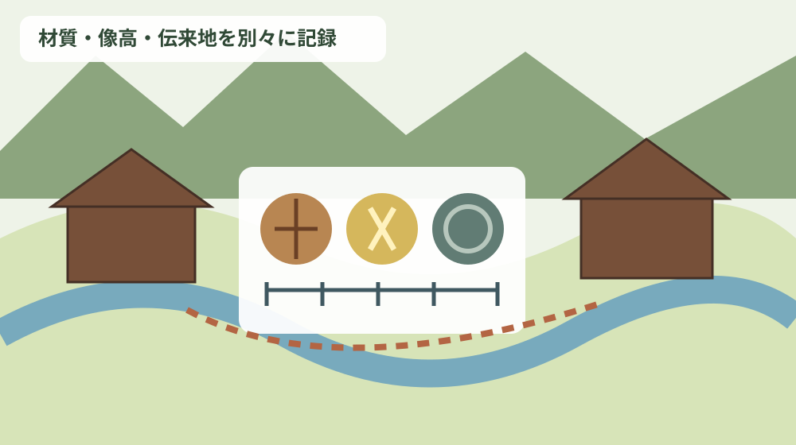
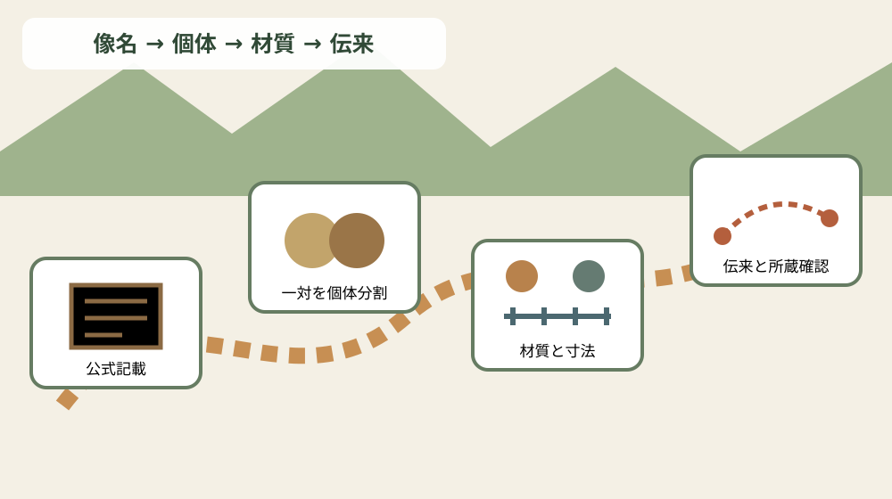

森町の仏像・神像を材質・像高・年代・伝来地で索引化する

この記事の要点
Q. 森町に伝わる仏像や神像を、寺院名の一覧とは違う形で調べるにはどうすればよいですか。
A. 一体ごとに「像名／員数／指定／像高／年代／材質・技法／作者／伝来地／現所蔵先／典拠」を分けます。森町公式「47 森町の彫刻」は、平安後期の木造阿弥陀如来坐像、江戸時代の子安地蔵、神社所蔵の左大臣・右大臣像や唐獅子像などを具体的に記録しています。本記事は参拝先や寺院の由緒を案内するものではなく、像そのものの物理情報と移動履歴を失わず検索する索引です。
寺院案内ではなく、像そのものを主語にする
既存の寺院ページは、寺院名、宗派、所在地、参拝前の注意を知る入口です。今回の索引はそこへ別の寺院名簿を重ねません。寺院や神社に伝わる一体の像について、材質、寸法、制作年代、伝来地、所蔵先を検索できる形へ分解します。
墓地の承継、法要、御朱印、拝観時間もこの記事の中心ではありません。文化財資料に書かれた像の情報と、公開条件や宗教実務を混ぜないためです。索引に載ることは、いつでも見学できるという意味ではありません。
森町公式は、仏像は建造物のように目につきやすくなく、寺院の奥深く大切に保存されてきたため全貌をつかみ切れないと説明しています。つまり、索引は「町内の全像を網羅した名簿」ではなく、現時点で公表資料から確認できる記録です。
同ページは、森町域では鎌倉から平安時代へさかのぼる作品がほとんど知られていなかったものの、調査で貴重な仏像がいくつか発見されたと記します。発見という言葉も、制作年と調査年を同じ欄へ入れない理由になります。
公式資料を検索項目へ分解する
最初の木造阿弥陀如来坐像は1躯、未指定、像高85.0センチメートル、平安後期、木造漆箔です。定印を結び結跏趺坐する像で、森町一宮の米倉・極楽寺所蔵と記されています。
二つ目の木造阿弥陀如来坐像は1躯、未指定、像高81.7センチメートル、平安後期、木造漆箔です。森町三倉の田能・蔵泉寺所蔵で、各部分に傷みはあるものの頭体のバランスがよいと説明されます。
像名、年代、材質が同じ二像でも、像高と所蔵先が異なります。「阿弥陀如来像」という一行へまとめれば検索結果が衝突します。作品IDを付け、所在地と寸法の両方で区別する必要があります。
木造子安地蔵は1躯、町指定、像高132.1センチメートル、江戸時代、木造漆箔、木喰行道作で、森町森の蓮華寺所蔵です。木喰上人が1800年5月から6月にかけ、ほか3体を彫ったとも記されています。
左大臣・右大臣像は2躯、町指定、江戸時代、木造彩色です。左大臣像132.0センチメートル、右大臣像131.0センチメートルと別々の像高があり、森町一宮の小國神社所蔵です。
この一対は、明治15年に焼失した楼門へ安置されていたと公式ページが説明します。現在の所蔵先だけでなく「旧安置場所＝焼失前の楼門」を伝来履歴へ残せば、建物史との接続ができます。
木造唐獅子像は1対、町指定、江戸時代、木造彩色、寄木造です。阿形50.7センチメートル、吽形51.8センチメートルで、森町天宮の天宮神社所蔵と記されています。
「1対」と「2躯」は同じ検索列に押し込まず、作品単位の員数と個体単位を分けます。阿形・吽形の寸法差も残せるため、将来の調査値と照合しやすくなります。
毘沙門天像は1躯、未指定、平安時代、森町三倉の田能・蔵泉寺所蔵です。公式の個別説明には像高と材質の記載がありません。空欄を木造などの推測で埋めず、「1098ページでは記載なし」とします。
聖観音菩薩立像墨書銘は、南都椿井次郎の作で、淡山神社平等院峯堂にあったものとされ、森町飯田の金毘羅山所蔵です。旧所在地と現所蔵先を一つの「場所」欄へ入れない好例です。
不動明王と小國鹿苑菩薩は、一宮に祀られてきた町指定の像です。不動明王は南北朝期、小國鹿苑菩薩は桃山期の作で、森町一宮の蓮増院所蔵と説明されます。
公式の概説は、蔵泉寺に平安時代後期の木造阿弥陀如来坐像と、それよりやや古い木造不動明王立像、木造毘沙門天立像が伝来すると記します。個別項目にない不動明王の存在も、概説由来だと分かる形で別レコードにします。
遍照寺の銅造大日如来坐像は総高5メートルに及び、法界定印を結ぶ胎蔵界大日如来像です。蓮弁、反花、框からなる台座に座し、蓮弁には願主、鋳物師、施主などが刻まれ、1718年の作とされています。
| 像・作品 | 像高等 | 年代 | 材質・技法 | 伝来・所蔵 |
|---|---|---|---|---|
| 阿弥陀如来坐像 | 85.0cm | 平安後期 | 木造漆箔 | 米倉極楽寺 |
| 阿弥陀如来坐像 | 81.7cm | 平安後期 | 木造漆箔 | 田能蔵泉寺 |
| 子安地蔵 | 132.1cm | 江戸時代 | 木造漆箔 | 蓮華寺 |
| 左大臣／右大臣 | 132.0／131.0cm | 江戸時代 | 木造彩色 | 旧楼門／小國神社 |
| 唐獅子 阿形／吽形 | 50.7／51.8cm | 江戸時代 | 木造彩色・寄木造 | 天宮神社 |
| 毘沙門天像 | 記載なし | 平安時代 | 記載なし | 田能蔵泉寺 |
| 聖観音菩薩立像墨書銘 | 記載なし | 記載なし | 記載なし | 旧平等院峯堂／金毘羅山 |
| 不動明王／小國鹿苑菩薩 | 記載なし | 南北朝／桃山 | 記載なし | 一宮／蓮増院 |
| 大日如来坐像 | 総高約5m | 1718年 | 銅造 | 遍照寺 |

材質と技法を一語にしない
木造漆箔は、主材が木であることと、表面に漆や箔を用いることを同時に示します。索引では「主材＝木」「表面＝漆箔」と分ければ、木造彩色との比較ができます。
唐獅子像の寄木造は構造技法です。木造、彩色、寄木造を一つの長文欄に閉じ込めず、主材、表面、構造の三列へ分けると、修理記録を追加するときにも混乱しません。
大日如来坐像は銅造であり、木像群とは保存環境や制作技術の見方が異なります。ただし、公式ページから保存状態を推測せず、材質と総高、銘文情報までを確定欄へ入れます。
像高と総高を同じ数値として並べない
像高は像本体の高さとして記されますが、大日如来の説明は台座を含む文脈で「総高5メートルにも及ぶ」とします。センチメートルへ換算して単純比較する前に、測定対象が像高か総高かを単位と一緒に保持します。
左大臣と右大臣、阿形と吽形は一対でも数値が別です。平均値を作るより、親レコードに一対、子レコードに各像高を持たせる方が原資料へ戻りやすい設計です。
寸法が記載されていない像はゼロではありません。「不明」「未測定」「資料に記載なし」も意味が違うため、今回は「参照ページに記載なし」と記録します。
年代は幅と根拠を残す
平安後期、平安時代、南北朝期、桃山期、江戸時代という記載を、根拠なく単年へ変換しません。検索では時代区分で絞り込み、年が明記された1718年や1800年は別の数値欄に入れます。
子安地蔵の江戸時代は作品年代、1800年5月から6月は木喰上人がほか3体も彫ったという活動記録です。制作年代、作者活動、伝来の出来事を同じ年表欄へ混ぜないようにします。
左大臣・右大臣像の江戸時代と、楼門が焼失した明治15年も別の出来事です。像が焼失を免れた経過は公式説明からそれ以上推測せず、旧安置場所の履歴として記録します。
伝来地と所蔵先を地図で分ける
地図上の点は、現在所蔵と旧所在地で記号を変えます。聖観音菩薩立像は、淡山神社平等院峯堂にあったという伝来と、飯田・金毘羅山所蔵という現在情報を線で結べます。
ただし、移動の年月、経路、理由は1098ページから分かりません。線は「資料に二地点が記載」の意味に限定し、実際の運搬経路を描いたものではないと注記します。
一宮、三倉田能、森、天宮、飯田という地区差は、文化財の分布を見る入口です。寺院・神社の内部位置や収蔵場所を公開地図で細かく示す必要はありません。
良い点
森町公式「森町文化財保存活用地域計画の認定について」は、令和8年7月17日の答申を受けて文化庁長官により計画が認定されたと案内します。文化財保護法第183条の3に基づく法定計画で、計画本文も公開されています。
計画本文は、令和8年3月時点の指定等文化財を合計116件とし、美術工芸品の彫刻を国指定0、県指定0、町指定12、国登録0、計12と整理しています。この12件と1098ページの掲載像が完全に同じ集合だとは断定しません。
1098ページには未指定の阿弥陀如来像や毘沙門天像も載ります。指定区分だけを入口にすると、調査で確認された重要な情報を落とすため、索引には「指定」「未指定」「ページ記載なし」をすべて残します。
索引の良い点は、何が公開され、何が欠けるかを見える形にできることです。像高や材質の空欄は不備を責める材料ではなく、次の資料確認で尋ねる項目です。
注文したい点
像の所蔵先は信仰の場であり、常設展示館とは限りません。公式資料に写真があることと、現地でいつでも拝観・撮影できることは別です。訪問前に公開条件を確認し、無断で堂内へ入りません。
大きな大日如来像でも、道路、駐車場、見学導線はこの資料だけでは分かりません。地図上の近さを根拠に生活道路へ駐車せず、寺院や管理者の案内を優先します。
文化財が近隣にあるというだけで、個人の土地へ一律の制限があるとは言えません。工事や土地利用では、指定範囲、埋蔵文化財、接道、境界、農地などをそれぞれ担当資料で確認します。
家族の古写真や古文書に像名が出る場合は、写真の撮影日、裏書、保管者を記録します。像名の似た作品へ安易に結びつけず、所蔵先と寸法が一致するかを確かめます。
地域で語られる呼び名と公式資料の像名が違うこともあり得ます。その場合は、通称を正式名称へ上書きせず、別名欄へ発言者、確認日、使われていた地区を記録します。呼び名だけで同一像と判断せず、員数、像高、材質、姿勢、所蔵先を照合してから関連づけます。
写真を索引へ添える場合も、公式ページの画像を無断で複製するのではなく、出典ページへのリンクを基本にします。現地で新たに撮影するときは、所蔵者の許可範囲、公開先、人物や住所の写り込みを確認し、撮影許可が公開許可を兼ねると思い込まないことが大切です。
対案・結論
一件カードの先頭に作品ID、像名、員数、指定区分を置きます。次に像高・総高、主材、表面、構造、年代、作者を並べ、最後に旧所在地、現所蔵先、典拠URL、確認日を記します。
一対・二躯の作品は親子構造にします。親に作品名と指定区分、子に左・右、阿・吽、個別像高を入れれば、一覧表示と詳細表示の双方で情報を失いません。
不一致や空欄は保留欄へ回し、想像で補いません。管理者へ質問する場合は、ページ名、像番号、確認したい欄を示し、回答日と公開可否も記録します。

家族に残す記録
実家カルテには、像の文化史だけでなく、実家の住所、土地建物の名義、接道、境界、農地の地番、連絡先を先に残します。文化財との関係を伝え聞いた場合は、誰からいつ聞いたかを別紙にします。
寺社への寄進、預かり物、写真、古文書があるなら、所有権や由来を決めつけず、現物写真、寸法、保管場所、関係者の連絡先を記録します。売却未定でも、所在不明を防ぐ整理には意味があります。
宗教上の関係、個人名、非公開の収蔵場所は公開索引へ載せません。家族内の非公開ファイルと、公式資料だけから作る公開索引を分けます。
大石の視点
ここからは公的資料の記載ではなく、私、大石浩之の見解です。小さな不動産業者としては、近くに古い像が伝わることだけで土地や建物の価格を上下させず、文化的背景と不動産条件を別表にするのが誠実だと考えます。
現地確認では、道路、境界、地目、農地該当、登記名義、残置物、維持費を順に見ます。文化財地図は地域を理解する資料であり、境界図や規制区域図の代わりにはしません。
家族が「寺に古いものがあるらしい」と話しても、所有・寄託・寄進の区別は資料で確かめます。売る、貸す、保有するという選択を急がず、関係書類と連絡先をそろえることから始めます。
私は、空欄を正直に残せる索引が役に立つと考えます。分からない材質や像高を推定で埋めず、次に誰へ何を尋ねるかが分かれば、地域への敬意と実務の確かさを両立できます。
よくある質問
拝観場所の一覧ですか
違います。像の物理情報と伝来を整理する索引で、拝観可否や公開日時は所蔵者へ確認します。
一対の像は一行ですか
親レコードと個体レコードを分け、左・右や阿・吽の像高を保持します。
伝来地と所蔵先は同じですか
同じとは限りません。旧安置場所、旧所在地、現所蔵先を別欄にします。
未指定像は除外しますか
除外しません。公式ページで未指定と明記された状態をそのまま索引化します。
まとめ
森町の仏像・神像索引は、寺院名ではなく像一体を主語にします。材質、像高、年代、伝来地、所蔵先、指定区分を分けることで、同名像や一対の作品を正確に検索できます。
今日の一歩は、1098ページから一件カードを一枚作ることです。記載のない欄は推測せず、出典と確認日を残してください。
地域の文化を大切にすることは、すべてを公開することではありません。公開資料、家族内記録、所蔵者だけが扱う情報を分け、次の世代へ確かな索引を渡します。
参考にした公式情報
- 47 森町の彫刻／静岡県森町（仏像調査の背景、密教寺院の分布、蔵泉寺・極楽寺・遍照寺・蓮華寺の像、個別8項目の員数・指定・像高・年代・材質・作者・伝来地・所蔵先を2026年8月17日に確認。更新日2019年3月5日）
- 森町文化財保存活用地域計画の認定について／静岡県森町（令和8年7月17日の答申を受けた認定、文化財保護法第183条の3に基づく法定計画、計画本文、令和8年3月時点の指定等文化財116件と彫刻12件を2026年8月17日に確認。更新日2026年8月6日）

最終確認日：2026-08-17 ／ 本記事は公表情報と執筆者の見解を分けています。像高・材質・年代の記載がない項目は補っていません。拝観、撮影、収蔵場所の公開可否は所蔵者と森町社会教育課文化振興係へ確認してください。